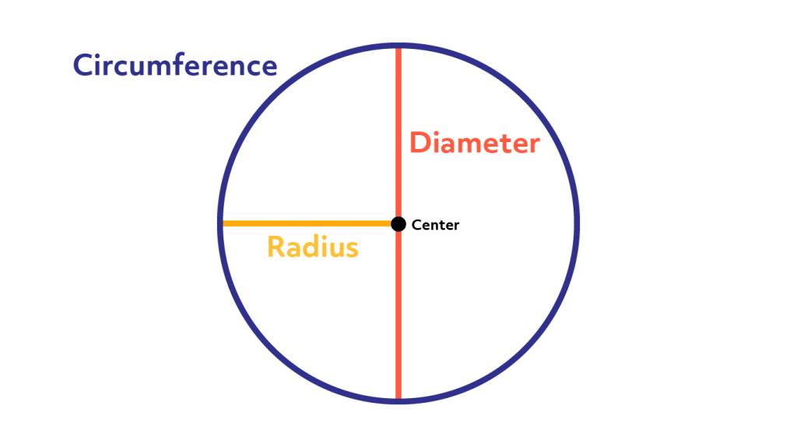

When performing calculations with a circle, a common number used is pi, or Π. But what is pi? Well, it is simply the ratio between the diameter of the circle, or the straight line that goes from one side of a circle, through the center, and to the other side, and the circumference, also known as the perimeter. This explains the circumference formula, as it is simply doubling the radius to get the diameter, as the radius is half of the diameter by definition, and multiplying it by pi. But what about the area? Well, pi has another special property. Pi over four, which is roughly 78.5%, is the percentage of a square a circle takes up. Simply put, if a square has an area of 4, a circle with a diameter equal to the square's height will have an area of pi, or roughly 78.5% the area of the square. This is why the area formula includes pi. First, you multiply the radius with itself, which gives you the area of a square with side lengths equal to the radius. But because the radius is half the diameter, it would be like taking a square with a side length of 4 and halving that before calculating the area, which gives you a square a quarter of the size. To turn that smaller square into the size it should be, you would multiply it by 4. But because we want the area of a circle, we multiply by pi, which is only about 78.5% of 4, giving us the area of a circle. But don't worry if you didn't understand that, because this calculator does, and that is all that matters. Below you will find a box to input a radius, and the calculator will give you the area and circumference of a circle with the radius you inputted. Have fun!
Radius =
